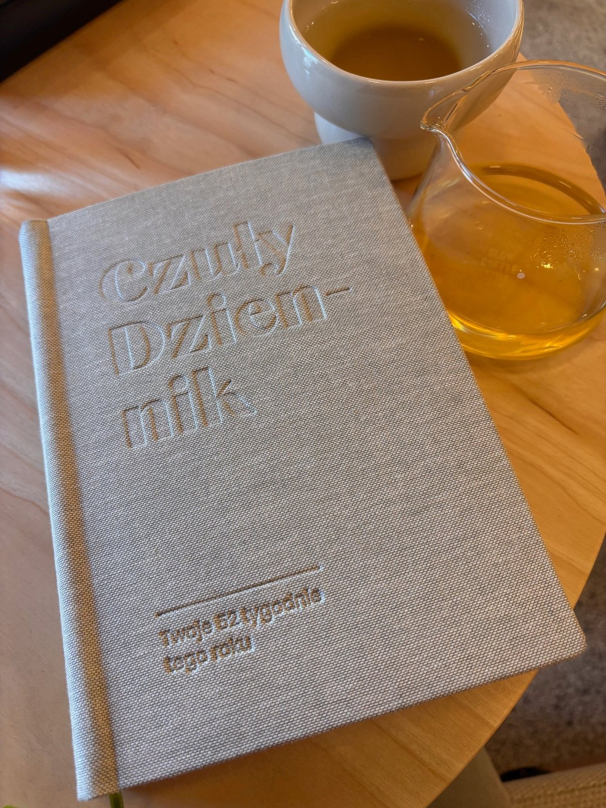
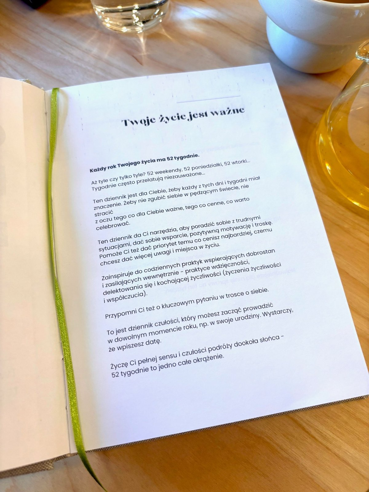
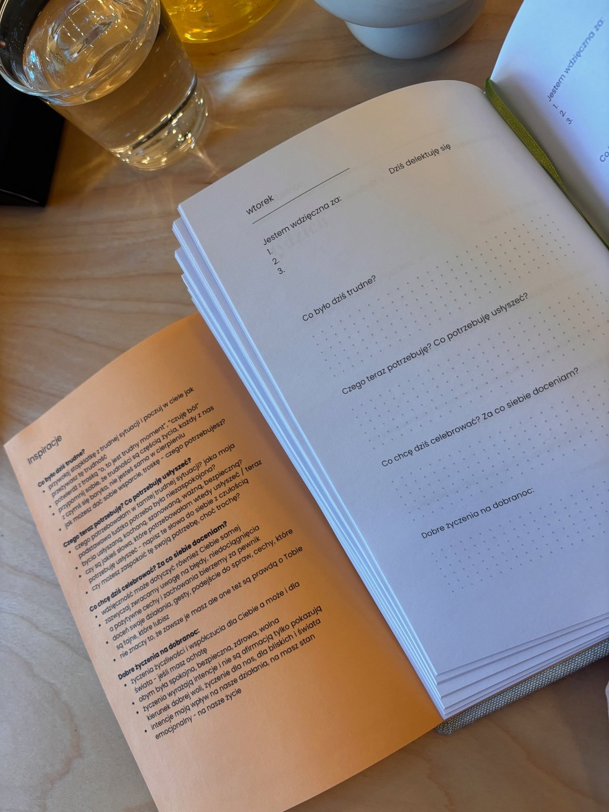
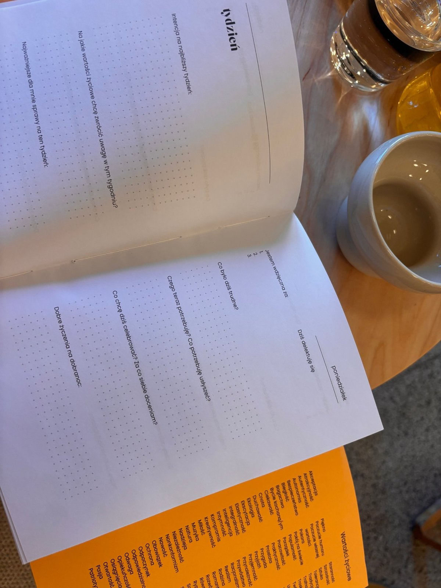

52 tygodnie czułości dla siebie. Przestrzeń, w której każdy dzień ma znaczenie, a Ty dajesz sobie wsparcie, którego naprawdę potrzebujesz.
Zamów teraz - Przedsprzedaż
Kolejny tydzień za Tobą. Kolejny miesiąc. Pędzimy tak szybko, że zapominamy zatrzymać się przy tym, co ważne. Przy sobie samej.
Czuły Dziennik to nie kolejny planer. To przestrzeń, w której dajesz sobie prawo do tego, by zwolnić, poczuć i zaopiekować się sobą – z czułością, na jaką zasługujesz każdego dnia.



Podpowiedzi, które pomogą Ci prowadzić ze sobą współczujący dialog – nawet w najtrudniejsze dni.
Przestrzeń na trudne emocje i wsparcie, którego potrzebujesz, żeby przez nie przejść.
Codzienne zaproszenie do dostrzegania piękna, małych radości i tego, co naprawdę cenne.
Możliwość regularnego sprawdzania – czy dajesz uwagę temu, na czym Ci zależy?
Pełne okrążenie dookoła słońca – rok pełen sensu, obecności i czułości.
Praktyki życzenia sobie i innym współczucia, życzliwości i wsparcia.
Nie musisz czekać na styczeń. Możesz zacząć w swoje urodziny, w pierwszy dzień wiosny – wtedy, gdy poczujesz, że tego potrzebujesz.
Każdy tydzień to nowe otwarcie. Nowa przestrzeń na refleksję, wsparcie i celebrowanie tego, co jest.
Kilka minut dziennie. To tyle i aż tyle – by zatrzymać się, odetchnąć i spotkać ze sobą.
Bo zasługujesz na to, by rozmawiać ze sobą tak, jak rozmawiasz z kimś, na kim Ci zależy. By dawać sobie wsparcie zamiast krytyki. By pamiętać, że Twoje życie – wszystkie te dni, tygodnie, chwile – jest ważne.
Czuły Dziennik pomoże Ci to robić każdego dnia, albo wtedy, kiedy poczujesz potrzebę.
Ten dziennik jest dla Ciebie, jeśli czujesz, że dni zlewają się w jedno, a Ty gubisz siebie w codziennych obowiązkach. Jeśli potrzebujesz narzędzi, żeby poradzić sobie z trudnymi emocjami. Jeśli chcesz nauczyć się rozmawiać ze sobą łagodniej, bez krytyki i wymagań. Jeśli tęsknisz za przestrzenią, w której możesz po prostu być – bez oceniania.
Twoje 52 tygodnie czekają. 52 okazje, by być dla siebie czułą przewodniczką. By nie zgubić tego, co cenne. By żyć z większą obecnością i sensem.
Możesz zacząć w dowolnym momencie – wystarczy wpisać datę 💚